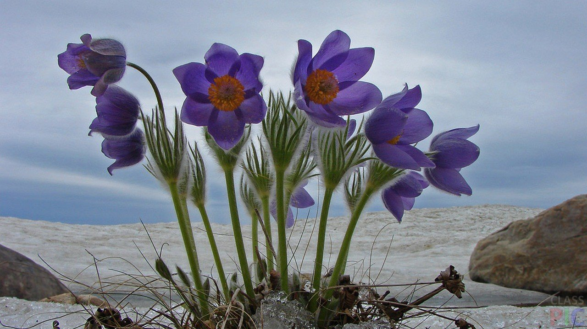

Весна
Весна́ — одна з чотирьох пір року між зимою та літом. Коли в Північній півкул весна, у Південній півкулі буде осінь і навпаки. Навесні відбувається рівнодення, довжина дня приблизно дорівнюють 12 годин і його тривалість збільшується упродовж цієї пори.
Календарна весна складається із трьох місяців:
- Березня
- Квітня
- Травня
